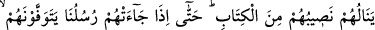
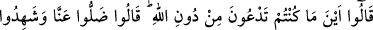
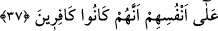

39. Öncekiler de sonrakilere derler ki: Sizin bize bir üstünlüğünüz yok. O halde
siz de yaptıklarınıza karşılık azabı tadın!
40. Bizim ayetlerimizi yalanlayıp da onlara karşı kibirlenmek isteyenler var ya,
işte onlara gök kapıları açılmayacak ve onlar, deve iğne deliğine girinceye kadar
cennete giremeyeceklerdir! Suçluları işte böyle cezalandırırız!
41. Onlar için cehennem ateşinden döşekler, üstlerine de örtüler vardır. İşte
zalimleri böyle cezalandırırız!
“Ayetlerimizi yalanlayanlara” yani peygamberleri yalanlayanlara “ve onları
kabûle” bizim birliğimizin delillerine îmânâ “tenezzül etmeyenlere” kibirlenen,
büyüklenen ve serkeşlik gösterenlere “gelince, onlar da ateş ehlidir” ateşte kalacak
olanlardır; “onlar orada ebedî kalacaklardır.”
37. Allah’a iftira eden ya da O’nun ayetlerini yalanlayandan daha zalim kimdir!
Onların kitaptaki nasipleri kendilerine erişecektir. Sonunda elçilerimiz (melekler)
gelip canlarını alırken “Allah’ı bırakıp da tapmakta olduğunuz tanrılar nerede?”
derler. (Onlar da) “Bizden sıvışıp gittiler” derler. Ve kâfir olduklarına dair kendi
aleyhlerine şahitlik ederler.
“Allah’a yalan uyduran” yani, Allah’ın buyurmadığını buyurdu diyen, Allah’a ortak,
eş ve çocuk isnad ederek iftira eden “ya da O’nun ayetlerini” Allah’ın buyruklarını
“yalanlayanlardan daha zalim kim olabilir?” yani, kimin zulmü bundan daha
büyüktür? Hiç kimsenin zulmü bundan daha büyük değildir.
Allah Teâlâ, kendisi hakkında yalan söyleyenlerle ayetlerini yalanlayanları, günah
bakımından aynı seviyede tutarak şöyle buyurmuştur: “Onlara Kitab’dan” yani,
Kitab’da (Levh-i Mahfûz’da) yazılan, takdir edilen ömür ve rızıklardan “nasibleri
erişecektir. Nihayet, elçilerimiz” ölüm meleği ve yardımcıları “gelip canlarını
alırken” onların ölümünü gerçekleştirip ruhlarını kabzederken “Hani Allah’tan başka
yalvardıklarınız” dünyada taptığınız ilâhlarınız “nerede? derler.” Yani, kendilerine
ölüm melekleri gelene kadar onlara takdir edilen ömür ve rızıklar ulaşacaktır.
“Onlar da: “Bizden kayboldular.” nerede olduklarını bilmiyoruz “derler ve”